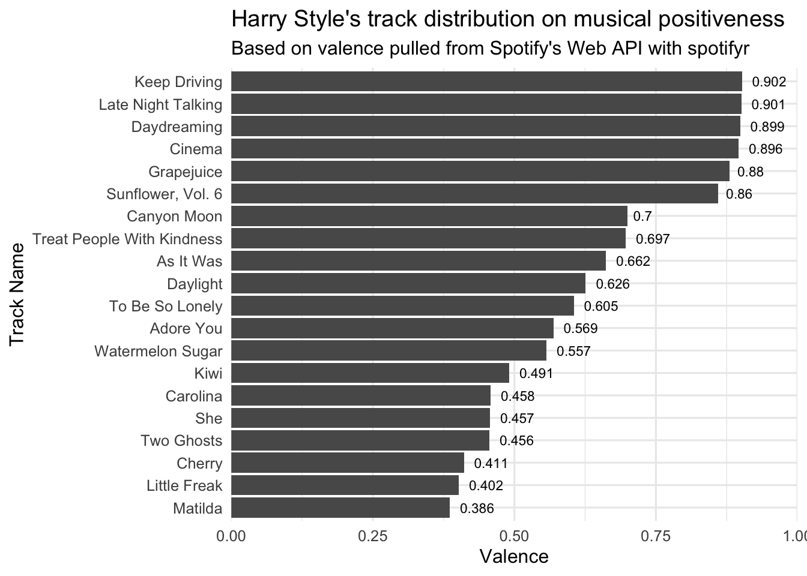
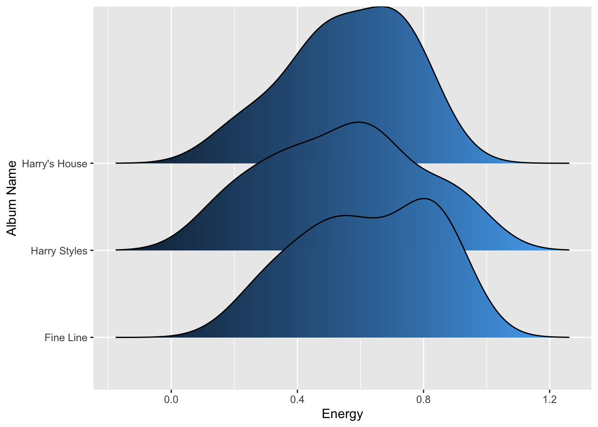

library(tidyverse)
library(spotifyr)
library(purrr)
library(knitr)
library(ggridges)
library(ggjoy)
library(plotly) About
spotifyr is an R wrapper for pulling track audio features and other information from Spotify’s Web API in bulk. For more information on the package, I’d recommend taking a look at Charlie’s README.md for more details and examples.
Load packages
Find My All Time Favorite Artists
## Set up
# Sys.setenv(SPOTIFY_CLIENT_ID = 'xxxxxxxxxxxxxxxxxxxxx')
# Sys.setenv(SPOTIFY_CLIENT_SECRET = 'xxxxxxxxxxxxxxxxxxxxx')
# access_token <- get_spotify_access_token()
top_art_tracks_long <- get_my_top_artists_or_tracks(type = 'artists',
time_range = 'long_term',
limit = 50) %>%
select(.data$name, .data$genres) %>%
rowwise %>%
mutate(genres = paste(.data$genres, collapse = ', ')) %>%
ungroup
top_art_tracks_long %>%
head(10) %>%
kable()| name | genres |
|---|---|
| Taylor Swift | pop |
| Drake | canadian hip hop, canadian pop, hip hop, rap, toronto rap |
| Kehlani | dance pop, pop, pop rap, r&b |
| The Weeknd | canadian contemporary r&b, canadian pop, pop |
| Harry Styles | pop |
| Ariana Grande | dance pop, pop |
| Justin Bieber | canadian pop, pop |
| Aminé | hip hop, pop, portland hip hop, rap, underground hip hop |
| MUNA | art pop, dance pop, electropop, indie pop, indie poptimism, la pop, metropopolis, pop |
| Doja Cat | dance pop, pop |
Find my favorite tracks at the moment
top_art_tracks_atm <- get_my_top_artists_or_tracks(type = 'tracks',
time_range = 'short_term',
limit = 50) %>%
mutate(
artist.name = map_chr(artists, function(x) x$name[1])
) %>%
select(name, artist.name, album.name) What are the most joyful Harry Styles songs and albums ?
harry_styles <- get_artist_audio_features('harry styles')
harry_styles_joyful_songs <- harry_styles %>%
arrange(-valence) %>%
select(.data$track_name, .data$valence) %>%
head(20)
ggplot(
harry_styles_joyful_songs,
aes(y = valence, x = reorder(track_name, valence))
) +
geom_col() +
coord_flip() +
labs(title = "Harry Style's track distribution on musical positiveness",
subtitle = "Based on valence pulled from Spotify's Web API with spotifyr",
y = "Valence",
x = "Track Name") +
geom_text(aes(label = round(valence, digits = 3)), position=position_dodge(width=1.0), hjust= -0.30, size=3) +
scale_y_continuous(expand = c(0, 0), limits = c(0,1)) +
theme_minimal(base_size = 12)
ggplot(harry_styles,
aes(x = energy, y = album_name, fill = ..x..)) +
geom_density_ridges_gradient(show.legend = FALSE) +
scale_fill_viridis_c(option = "C") +
labs(x = "Energy",
y = "Album Name") +
theme_minimal(base_size = 16)
Exploring Harry Style’s discography on danceabiliy vs. valence (music positiveness)
- valence : A measure from 0.0 to 1.0 describing the musical positiveness conveyed by a track. Tracks with high valence sound more positive (e.g. happy, cheerful, euphoric), while tracks with low valence sound more negative (e.g. sad, depressed, angry).
hs <- harry_styles %>%
rename(album = album_name,
track = track_name) %>%
ggplot(aes(x = valence, y = danceability)) +
geom_point(size = 2, aes(color = album, group = track)) +
scale_color_manual(values=c("#25b6d5", "#b1bf46", "#813f2b"), name = "Album Name") +
theme_minimal() +
labs(x = "Valence",
y = "Danceability") +
theme(legend.position="bottom") +
scale_x_continuous(expand = c(0, 0), limits = c(0,1)) +
scale_y_continuous(expand = c(0, 0), limits = c(0, 1))
ggplotly(hs) %>%
layout(legend = list(orientation = "h", # show entries horizontally
xanchor = "center", # use center of legend as anchor
x = 0.5, # put legend in center of x-axis
y = -0.15)) # adjust legend text so its not overlapping with x-axis